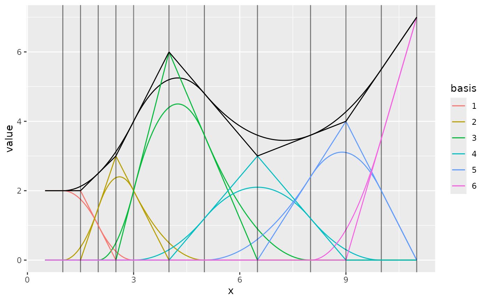

Create a fm_mesh_1d object.
Usage
fm_mesh_1d(
loc,
interval = range(loc),
boundary = NULL,
degree = 1,
free.clamped = FALSE,
...
)Arguments
- loc
B-spline knot locations.
- interval
Interval domain endpoints.
- boundary
Boundary condition specification. Valid conditions are
c('neumann', 'dirichlet', 'free', 'cyclic'). Two separate values can be specified, one applied to each endpoint.- degree
The B-spline basis degree. Supported values are 0, 1, and 2.
- free.clamped
If
TRUE, for'free'boundaries, clamp the basis functions to the interval endpoints.- ...
Additional options, currently unused.
See also
Other object creation and conversion:
fm_as_collect(),
fm_as_fm(),
fm_as_lattice_2d(),
fm_as_lattice_Nd(),
fm_as_mesh_1d(),
fm_as_mesh_2d(),
fm_as_mesh_3d(),
fm_as_segm(),
fm_as_sfc(),
fm_as_tensor(),
fm_collect(),
fm_lattice_2d(),
fm_lattice_Nd(),
fm_mesh_2d(),
fm_segm(),
fm_simplify(),
fm_tensor()
Author
Finn Lindgren Finn.Lindgren@gmail.com
Examples
if (require("ggplot2")) {
m1 <- fm_mesh_1d(c(1, 2, 3, 5, 8, 10),
boundary = c("neumann", "free")
)
weights <- c(2, 3, 6, 3, 4, 7)
ggplot() +
geom_fm(data = m1, xlim = c(0.5, 11), weights = weights)
m2 <- fm_mesh_1d(c(1, 2, 3, 5, 8, 10),
boundary = c("neumann", "free"),
degree = 2
)
ggplot() +
geom_fm(data = m2, xlim = c(0.5, 11), weights = weights)
# The knot interpretation is different for degree=2 and degree=1 meshes:
ggplot() +
geom_fm(data = m1, xlim = c(0.5, 11), weights = weights) +
geom_fm(data = m2, xlim = c(0.5, 11), weights = weights)
# The `mid` values are the representative basis function midpoints,
# and can be used to connect degree=2 and degree=1 mesh interpretations:
m1b <- fm_mesh_1d(m2$mid,
boundary = c("neumann", "free"),
degree = 1
)
ggplot() +
geom_fm(data = m2, xlim = c(0.5, 11), weights = weights) +
geom_fm(data = m1b, xlim = c(0.5, 11), weights = weights)
}
